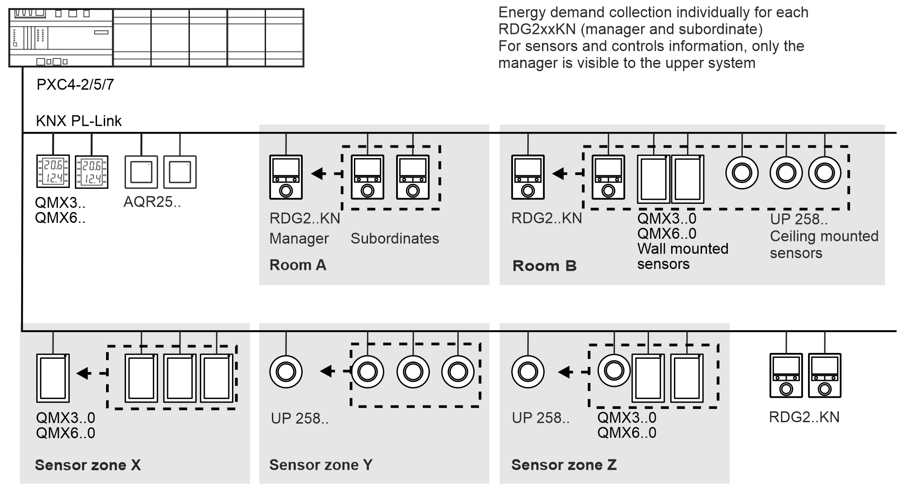
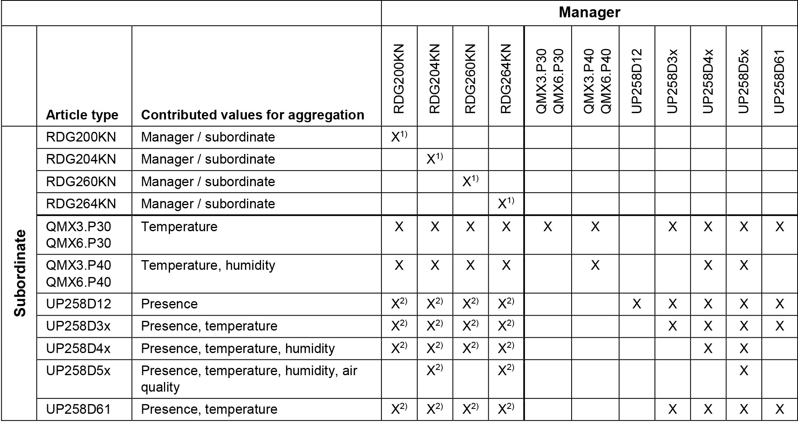

Collection, grouping and aggregation functions for KNX PL-Link devices
Room thermostats and compatible sensor devices can be grouped directly in ABT Site. As a result, only the group manager is visible to the programming environment and mapped to BACnet. You can create groups of up to 10 devices (1 manager + 9 subordinates). This reduces the programming and wiring effort and increases the maximum number of possible connected PL-Link devices on the KNX bus.

Use cases for grouping and aggregation functions
Create simple rooms with RDG2xxKN room thermostats combined with wall- and/or ceiling-mounted sensors:
- Using RDG2xxKN room thermostats as subordinates (same device type / same application).
- Aggregation of information from multiple presence detectors, shared automatically to RDG2xxKN manager with communication over KNX PL-Link.
- Aggregation of room temperature, air humidity, and air quality information shared automatically as average values to RDG2xxKN manager.
- Energy demand data for manager and subordinates for room thermostats can be collected individually by assigning coils to different heating and refrigeration distribution zones.
For bigger rooms (e.g. open space office environments), corridors, building entrance areas, restaurants, etc. without individual room controls, you can create zones with multiple sensors:
- Aggregation of information from multiple presence detectors shared automatically to the group manager.
- Aggregation of room temperature, air humidity, and air quality information shared automatically as average values to the sensors manager.
- Combine ceiling-mounted sensors with wall-mounted sensors into one sensor zone. The manager is always the sensor with the most sensor information.
Compatible devices for grouping and aggregation functions

|
1) Manager / subordinate configuration on RDG2xxKN:
2) On the RDG2xxKN manager, the physical presence detector must be enabled to have the required BACnet object available (P150/P153) Note: No mixing of QMX3/QMX6 devices for the manager/subordinate function. |
RDG2xxKN firmware version compatibilities for collection, grouping and aggregation functions
| ABT Site 5.2 | ABT Site 6.0 |
|---|---|---|
|
RDG200KN / RDG260KN | From V5.6, Index D | From V5.6, Index D |
Energy demand collection via distribution zones | - | From V5.6, Index D |
Collection- and grouping functions for sensors UP 258.. / QMX3..0 / QMX6..0 | - | From V5.6, Index D |
Manager / subordinate (multiple RDG2xxKN) | - | From V5.9, Index F |
Optimizations on commanding temperature setpoints from PXC4-2/5/7 1) | - | From V5.9, Index F |
RDG204KN / RDG264KN | From V7.4, Index B | From V7.4, Index B |
Energy demand collection via distribution zones | - | From V7.4, Index B |
Collection- and grouping functions for sensors UP 258.. / QMX3..0 / QMX6..0 | - | From V7.4, Index B |
Manager / subordinate (multiple RDG2xxKN) | - | From V7.6, Index D |
Optimizations on commanding temperature setpoints from PXC4-2/5/7 1) | - | From V7.6, Index D |
|
1) For setpoint display configuration (P104) on RDG2xxKN, starting from ABT Site V6.0, only 'Relative' is supported to avoid unexpected behavior when commanding 'Room temp. setpoint' on BACnet. |